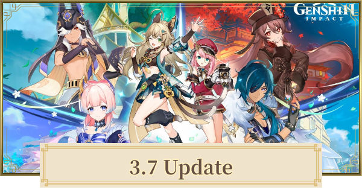
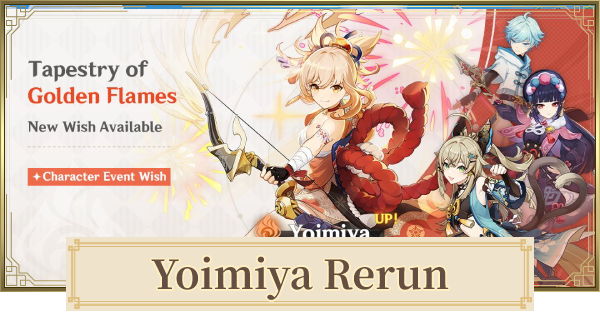
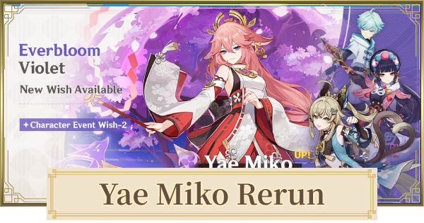
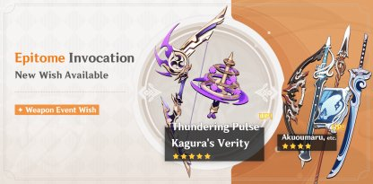
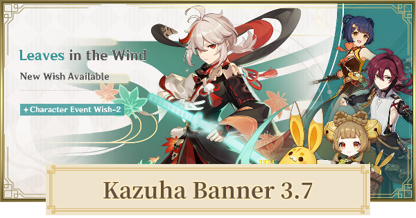
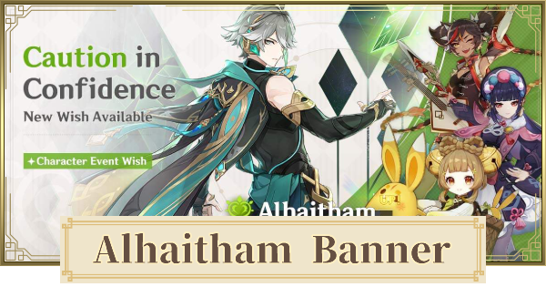
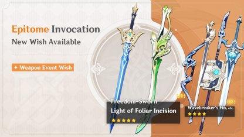
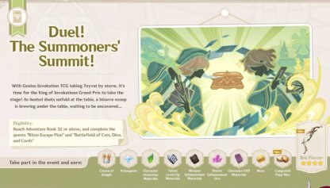
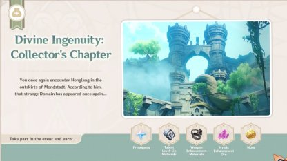

| Sobre | Novidades | Fim da Página |
Sobre:
Genshin Impact é um RPG mundo aberto desenvolvido em 2020, pela Hoyoverse (antiga Mihoyo), com mecânicas de jogo inspiradas no aclamado jogo da Nintendo, Zelda: Breath of The Wild e com o Sistema de GACHAPON muito popular entre jogos mobile, um sistema do qual a empresa ja havia trabalhado em seu primeiro jogo o Honkai Impact.
O jogo inicia contando a história de dois irmãos gêmeos que viajavam entre os universos visitando
diversos mundos, quando em uma de suas viagens eles são interrompidos por uma deusa desconhecida, neste
momento os irmãos lutam para se defender. O jogo então libera para o jogador escolher um dos gêmeos como o Main Character,
Aether(irmão) ou Lumine(irmã) assim definindo o gênero do protagonista, após a escolha do seu protagonista,
a Deusa captura o outro irmão e remove os poderes do personagem do jogador, e o
teletransporta para um mundo desconhecido.
O jogador então vaga por uma praia nesse novo mundo, quando vê alguém se afogando, ao salvar ela
somos apresentados a nossa fiel guia Paimon. Após o viajante (como os NPCs se referêm ao Protagonista)
contar o ocorrido a ela, a mesma nos informa que estamos no mundo de Teyvat e que nesse mundo haviam sete nações,
essas governadas por sete Arcontes, ao descobrir a existência dos sete, o viajante decide se encontrar com cada um deles
para descobrir se fora um deles o responsável por prender seu irmão, ou se eles conhecem a deusa que o fez.
Novidades:
Atualização 3.7:
Banners :
- 
- 
- 
- 
- 
- 
Primeira Fase:
Personagens :
Armas :
Segunda Fase:
Personagens :
Armas :
Eventos :
Duelo das Invocações!
O popular "Grande Torneio do Rei do Chamado Sagrado dos Sete" já começou! Sobre a mesa, ferozes duelos de cartas se desenrolam sucessivamente, enquanto embaixo da mesa parece haver uma grande e traiçoeira notícia esperando ser descoberta...
Engenhosidade Divina: Capítulo de Colecionador
A Guilda de Aventureiros criou 5 Designs de Domínio. A partir do início do evento, um novo Design de Domínio será aberto a cada dia. Complete o desafio do Design de Domínio e alcance o número designado de Pontos Divinos para obter Gemas Essenciais, Materiais de Elevação de Talento, Materiais de Ascensão de Armas, Minério de Refinamento Místico, Mora, entre outras recompensas.